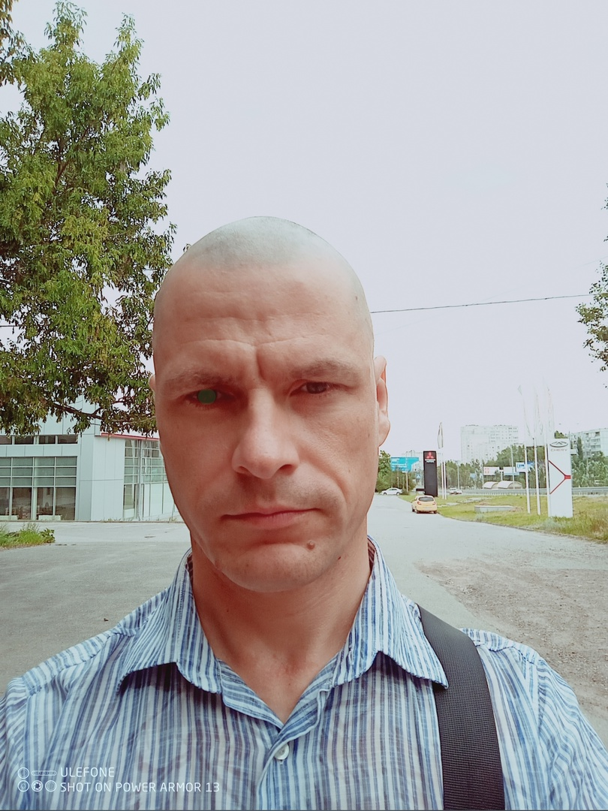

Куянцев
Александр
Сергеевич
Гражданство:
Россия
Город проживания:
Волгоград
Дата рождения:
23.10.1985
Карьерная цель
Инженер по тестированию
Занятость:
Полная
График работы:
Полный день
Контакты:
✉️
kuyancev1985@mail.ru
💎
ОПЫТ РАБОТЫ
с 01.06.2005 по настоящее время
Организация:
ПАО "Ростелеком". Сегмент технической инфраструктуры.
Специальность:
Старший специалист линейных сооружений
Должностные обязанности и достижения:
• Ремонт и обслуживание медно-жильных и оптических кабелей связи
• Устранение кабельных повреждений и аварий медно-жильных и оптических кабелей связи
• Измерение характеристик оптических и медно-жильных и оптических кабелей связи
Результаты:
• с 2005 по 2025 принял участие
• в ремонте 454 медно-жильных кабелей связи
• 223 оптических кабелей связи
• устранении 127 аварий на линиях связи
• обслуживании 335 заявок абонентов компании.
Дополнительно:
• Навыки работы с корпоративным ПО: Мобильный монтажник (ежедневно)
• Участие в корпоративных активностях: в 2019 г. принял участие в строительстве линий связи
в пос. Линёво Жирновский район г. Волгорад
🎓
ОБРАЗОВАНИЕ
2013
Учебное заведение:
Московский технический университет связи и информатики (МТУСИ)
Факультет:
Многоканальные Телекоммуникационные системы.
Специальность:
Инженер
🎖
ДОПОЛНИТЕЛЬНОЕ ОБРАЗОВАНИЕ
🧩
ДОПОЛНИТЕЛЬНАЯ ИНФОРМАЦИЯ
Языки:
Английский B2
Права:
B
Компетенции и опыт:
Разработка пользовательских интерфейсов на JavaScript (Ecmascript 6) или TypeScript.
Кросс-платформенная кросс-браузерная адаптивная вёрстка на СSS3, HTML5.
Написание бизнес-логики взаимодействия с сервером на JavaScript или TypeScript.
Создание Одностраничных приложений (Single page applications) на TypeScript,
JavaScript, React.js
О себе:
Мой технологический стек: HTML5, CSS3, Bootstrap5, JavaScript (ES5, ES6), TypeScript, Python3,
Django 5.1,
React.js, PLSQL, Postgres, Git, Webpack, Vite, Docker, Postman, Swagger, Exel, Word, Google Colab.
Я люблю читать техническую литературу, а именно документацию и спецификации и проходить курсы по языкам
программирования JavaScript, TypeScript, а также по HTML5 и CSS3.
Люблю экспериментировать с кодом и реализовывать собственные pet-проекты.
А также мне нравится создавать учебные пособия.
При тестировании ПО я применяю различные техники тестирования, такие как классы эквивалентности, граничные значения,
диаграммы состояний и переходов, попарное тестирование.
Работаю с Excel для создания таблиц и матриц, а также для
организации и анализа данных, с Word для описания тест-кейсов и других документов.
Для автоматизированного тестирования использую Python и библиотеки: requests для взаимодействия с API, pytest для написания тестов и faker
для генерации тестовых данных. Для тестирования функциональности веб-приложений, созданных на Javascript использую Jest.
Активно использую Google Colab для быстрого развёртывания и автоматизированного тестирования API.
В будущем я вижу себя в fullstack-тестировании вэб-приложений и хочу развиваться в этом направлении.
Мои знания, навыки и опыт сделали меня специалистом, который усилит Вашу команду тестирования в короткий срок.
Ссылка на портфолио